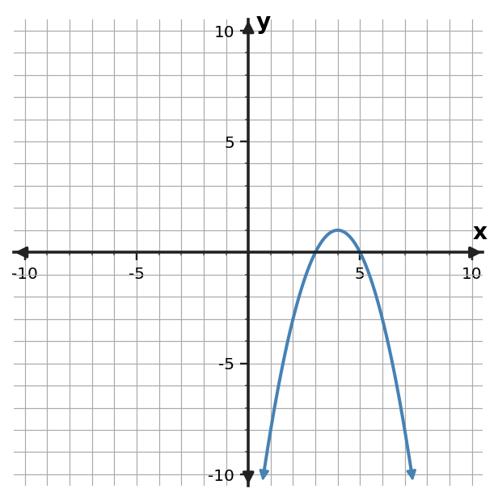

Algebra Extra Practice 4.5
1. For $y=(x-3)(x-1)$, predict the x-intercepts and axis of symmetry before graphing.
2. For $y=3x^2-5x-2$, identify the y-intercept and the direction of opening.
3. Use the table to identify the axis of symmetry and vertex of the quadratic pattern.
| x | y |
|---|---|
| -3 | -1 |
| -2 | 2 |
| -1 | 3 |
| 0 | 2 |
| 1 | -1 |
4. Use the graph to identify the vertex, axis of symmetry, direction of opening, and any visible x-intercepts.

5. A student claims $y=-x^2+4x+5$ opens upward because the constant term is positive. Critique the claim.
6. Use the quadratic table to connect the numerical pattern to graph features. Identify the vertex, axis of symmetry, and direction of opening.
| x | y |
|---|---|
| -3 | 1 |
| -2 | 4 |
| -1 | 5 |
| 0 | 4 |
| 1 | 1 |
7. Use the graph to identify the vertex, axis of symmetry, direction of opening, and any visible x-intercepts.

8. Predict the key graph features from the table: vertex, axis of symmetry, and direction of opening.
| x | y |
|---|---|
| -7 | 2 |
| -6 | -1 |
| -5 | -2 |
| -4 | -1 |
| -3 | 2 |
9. From the graph, predict the vertex, axis of symmetry, direction of opening, and x-intercepts.

10. A student says the axis of symmetry of $y=(x+1)(x-5)$ is $x=5$. Critique the claim.
11. For $y=(x+2)(x-4)$, predict the x-intercepts and axis of symmetry before graphing.
12. For $y=-x^2-2x+6$, identify the y-intercept and the direction of opening.
13. A student claims the table has axis of symmetry $x=2$. Use the paired table values to critique the claim and identify the correct vertex.
| x | y |
|---|---|
| -1 | 0 |
| 0 | -3 |
| 1 | -4 |
| 2 | -3 |
| 3 | 0 |
14. A student claims this quadratic has axis of symmetry $x=2$. Use the graph to critique the claim.

15. A student says the constant term of $y=x^2-6x+5$ is the vertex. Critique the claim.
16. For $y=(x+5)(x-1)$, predict the x-intercepts and axis of symmetry before graphing.
17. For $y=x^2 + 3x - 1$, identify the y-intercept and the direction of opening.
18. A student claims the table has axis of symmetry $x=1$. Use the paired table values to critique the claim and identify the correct vertex.
| x | y |
|---|---|
| -3 | 3 |
| -2 | 0 |
| -1 | -1 |
| 0 | 0 |
| 1 | 3 |
19. Adult tickets cost \$10 and student tickets cost \$5. A school sold 6 tickets for \$40. Write and solve a system to determine how many of each type were sold.
20. Adult tickets cost \$12 and student tickets cost \$4. A school sold 6 tickets for \$56. Write and solve a system to determine how many of each type were sold.
21. Adult tickets cost \$9 and student tickets cost \$5. A school sold 9 tickets for \$65. Write and solve a system to determine how many of each type were sold.
22. A linear model for a school fundraiser is $m=1.5d+9$, where $d$ is days and $m$ is hundreds of dollars. Predict $m$ at $d=6$ and interpret the slope and intercept.
23. A linear model for a school fundraiser is $m=2d+13$, where $d$ is days and $m$ is hundreds of dollars. Predict $m$ at $d=7$ and interpret the slope and intercept.
24. A linear model for a school fundraiser is $m=2.5d+17$, where $d$ is days and $m$ is hundreds of dollars. Predict $m$ at $d=8$ and interpret the slope and intercept.